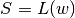
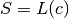
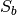
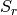
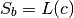
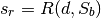

10.2.3. COBOL Definitions Module – Handle COBOL DDE’s¶
This is a small set of class definitions and functions that are used by cobol.loader as well as cobol.
The intent of this module is to avoid a few circular import dependencies.
10.2.3.1. The Architecture Problem¶
We have an issue of separation of three concerns:
- The underlying workbook and the parsing of CSV or XML or EBCDIC. This is the Physical Format.
- The logical layout or schema we’re imposing on the workbook’s data.
- The process of loading a schema, possibly using a meta-workbook. This includes the translation of COBOL notation into a useful schema.
Except for COBOL, a schema depends on a meta-workbook via a schema loader. But this is the limit of the relationship. We could say

Or schema= loader(workbook). This may involve a separate workbook file, a separate sheet within a file or even just columns within the current sheet.
For COBOL, we’d like to keep schema, schema loader and workbook separate, also, even though COBOL code doesn’t depend on COBOL data files. We’d still like to say schema= loader(cobol source).

We can imagine that an application will import a workbook class and a schema loader class. It will load the schema, then open the workbook using the schema.
However.
A COBOL schema with an occurs depending on (i.e. a DDE with variably_located == True) will have the schema depending on each row in addition to the overall loading.
We’re really taking about a Baseline Schema, , and a Row-Level Schema, , that is built by resolving any Occurs Depending On


We’ve changed schema_baseline= loader(cobol source) and then, for each row, schema_row= setSizeAndOffset(data, schema_baseline).
10.2.3.1.1. Where To Recompute¶
The fundamental issue is this: when can we recompute the offsets?
The choices for computing the offsets are these:
- At COBOL_File.rows_of() time – eagerly, but in the wrong module. See below.
- At COBOL_File.row_get() time – a bit more lazy, but still in the wrong module, since it’s here, not in cobol.loader.
- In the application before doing any schema processing on a given row. Very lazy. But now the application must be more deeply involved in ODO processing. The application would do something like the following. Sadly, it has a line that’s easy to overlook.
with open("xyzzy.cob") as source:
dde_list, schema = COBOL_schema( source )
with stingray.cobol.Character_File( filename, schema=schema ) as wb:
sheet= wb.sheet( filename )
for row in sheet.rows():
cobol.loader.setSizeAndOffset( dde_list[0] )
dump( schema, row )
10.2.3.1.2. The Module Dependency Problem¶
The Usage class properly depends on cobol. The cobol.loader.make_attr() function, also, properly depends on cobol.
The idea is that workbooks are more fundamental than schema. We might need to use one workbook to build a schema to read another workbook. Schema are higher-level constructs.
We want to avoid any circular dependency between cobol.loader referring back to cobol. The schema.RepeatingAttribute definition has a weak version of this undesirable. dependency. We finesse it by defining a bunch of properties that exploit the underlying DDE details without an explicit import of the DDE class.
To assure that cobol does not depend on cobol.loader, we’d have the class schema.RepeatingAttribute entirely built without reference to the base DDE. This, however, means that we would effectively clone the hierarchical relationships into the schema.RepeatingAttribute objects. Why bother?
If we extend COBOL_File.rows_of() or COBOL_File.row_get(), we exacerbates the problem because it would introduce a circular import. This would make cobol depend on cobol.loader explicitly.
10.2.3.1.3. Resolution¶
The setSizeAndOffset() function as well as a few other post-processing functions belong in an intermediate module that both cobol and cobol.loader depend on.
Specifically, Cell definitions, DDE definitions, and the related functions required to build schema attributes from DDE’s.
That way, cobol can import cobol.defs.setSizeAndOffset.
Also, cobol.loader can import cobol.defs.DDE.
And cobol.RepeatingAttribute can depend on cobol.defs.DDE.
10.2.3.2. Overheads¶
"""stingray.cobol.defs -- COBOL DDE and Tools."""
import logging
import weakref
import warnings
import stingray.cell
A module-level logger.
logger= logging.getLogger( __name__ )
10.2.3.3. Exception¶
- class cobol.defs.UnsupportedError¶
A syntax which expresses an unsupported feature of the COBOL language.
class UnsupportedError( Exception ):
"""A COBOL DDE has features not supported by this module."""
pass
The most important unsupported feature may be “separate signs.” These may be required for decoding bytes in some files.
10.2.3.4. Cell Subclasses and Conversions¶
Rather than tinker too much with the cell module, it seems better to introduce new cell.Cell subclasses unique to COBOL, EBCIDC and COMP-3 data.
There are three relevant features.
- Proper conversion from source characters or bytes.
- Preservation of the source characters (or bytes) for creating character-level (or byte-level) structured dumps of a record.
- Preservation of the original DDE attributes, because there is so much information required to interpret the bytes.
Consequently, even the cell.TextCell must be extended to include preservation of raw data.
Further, we have a distinction between text and numbers which are “USAGE DISPLAY”.
http://yuml.me/diagram/scruffy;/class/
#cobol.cell,
[TextCell]^[NumberCell],
[NumberCell]^[NumberDisplayCell],
[NumberCell]^[NumberCompCell],
[NumberCell]^[NumberComp3Cell],
[TextCell]^[ErrorCell],

Important
Non-Polymorphic.
These classes are profound extensions to the base definitions of cell. They are not polymorphic with the base classes. COBOL processing is not transparently identical to other workbook processing.
These cells are conventionally built by the the cobol.COBOL_File version of Workbook as a factory. These are rarely built any other way.
- class cobol.defs.TextCell¶
A cell which contains COBOL Alphanumeric data.
class TextCell( stingray.cell.TextCell ):
"""A COBOL TextCell, usually Usage Display."""
def __init__( self, raw, workbook, attr ):
self.raw, self.workbook= raw, workbook
self._value= workbook.text( self.raw, attr )
- class cobol.defs.NumberCell¶
This is an abstraction to simply hold all the standard conversions
class NumberCell( stingray.cell.NumberCell ):
"""A COBOL number."""
def to_int( self ): return int(self.value)
def to_float( self ): return float(self.value)
def to_decimal( self, digits=None ): return self.value
def to_str( self ): return str(self.value)
- class cobol.defs.NumberDisplayCell¶
A COBOL numeric item with USAGE DISPLAY.
class NumberDisplayCell( NumberCell ):
"""A COBOL Usage Display Numeric Cell."""
def __init__( self, raw, workbook, attr ):
self.raw, self.workbook= raw, workbook
self._value= workbook.number_display( self.raw, attr )
- class cobol.defs.NumberCompCell¶
A COBOL numeric item with USAGE COMPUTATIONAL.
class NumberCompCell( NumberCell ):
"""A COBOL Usage COMP Numeric Cell.
Three formats. Half-word, whole-word and double-word.
"""
def __init__( self, raw, workbook, attr ):
self.raw, self.workbook= raw, workbook
self._value= workbook.number_comp( self.raw, attr )
- class cobol.defs.NumberComp3Cell¶
A COBOL numeric item with USAGE COMPUTATIONAL-3.
class NumberComp3Cell( NumberCell ):
"""A COBOL Usage COMP-3 Numeric Cell.."""
def __init__( self, raw, workbook, attr ):
self.raw, self.workbook= raw, workbook
self._value= workbook.number_comp3( self.raw, attr )
- class cobol.defs.ErrorCell¶
A COBOL numeric item with invalid data.
class ErrorCell( stingray.cell.ErrorCell ):
"""A COBOL ErrorCell, bad data bytes with no relevant value."""
def __init__( self, raw, workbook, attr, exception=None ):
self.raw, self.workbook= raw, workbook
self._value= None
self.exception= exception
def __repr__( self ):
return "{0}({1!r}, {2!r})".format(
self.__class__.__name__, self.exception, self.raw )
10.2.3.5. Essential Class Definitions¶
The essential class definitions define the DDE we’re attempting to build. We can separated this structure into a few high-level subject areas:
- Usage Strategy Hierarchy defines the various kinds of USAGE options.
- Allocation Strategy Hierarchy defines the relationships among DDE’s: Predecessor/Successor, Group/Elementary or Redefines.
- Occurs Strategy Hierarchy defines the Occurs options of Default (no Occurs), simple Occurs, and more complex Occurs Depending On.
- The DDE Class itself.
10.2.3.5.1. Usage Strategy Hierarchy¶
The Usage class combines information in the picture, usage, sign and synchronized clauses.
The Strategy design pattern allows a DDE element to delegate the Usage.size() and Usage.create_func() operations to this class.
The Usage.size() method returns the number of bytes used by the data element.
- For usage DISPLAY, the size is computed directly from the picture clause.
- For usage COMP, the size is 2, 4 or 8 bytes based on the picture clause.
- For usage COMP-3, the picture clause digits are packed two per byte with an extra half-byte for sign information. This must be rounded up. COMP-3 fields often have an odd number of digits to reflect this.
The Usage.create_func() method returns a cell.Cell type that should be built from the raw bytes.
http://yuml.me/diagram/scruffy;/class/
#cobol_loader_usage,
[RecordFactory]<>-[DDE],
[DDE]<>-[DDE],
[DDE]-[Usage],
[Usage]^[UsageDisplay],
[Usage]^[UsageComp]
[Usage]^[UsageComp3]

- class cobol.defs.Usage¶
The Usage class provides detailed representation and conversion support for a given DDE. A schema.Attribute will refer to a cobol.defs.DDE. This DDE will have a Usage object that shows how to create the underlying Cell instance from the raw data in the cobol.COBOL_File subclass of Workbook.
For numeric types, this may mean a fallback from creating a NumberCell to creating a ErrorCell. If the number is invalid in some way, then an error is required.
The superclass of Usage is abstract and doesn’t compute a proper size.
class Usage:
"""Covert numeric data based on Usage clause."""
def __init__( self, source ):
self.source_= source
self.final= source
self.numeric= None # is the picture all digits?
self.length= None
self.scale= None
self.precision= None
self.signed= None
self.decimal= None
def setTypeInfo( self, picture ):
"""Details from parsing a PICTURE clause."""
self.final= picture.final
self.numeric = not picture.alpha
self.length = picture.length
self.scale = picture.scale
self.precision = picture.precision
self.signed = picture.signed
self.decimal = picture.decimal
def source( self ):
return self.source_
- Usage.create_func()¶
Create a CELL object. Use the raw bytes to build an Cell described by the given Attribute.
def create_func( self, raw, workbook, attr ):
"""Converts bytes to a proper Cell object.
NOTE: EBCDIC->ASCII conversion handled by the Workbook object.
"""
return stingray.cobol.TextCell( raw, workbook, attr )
- Usage.size(picture)¶
The count is in bytes. Not characters.
def size( self, picture ):
"""Default for group-level items."""
return 0
- class cobol.defs.UsageDisplay¶
Usage “DISPLAY” is the COBOL language default. It’s also assumed for group-level items.
class UsageDisplay( Usage ):
"""Ordinary character data which is numeric."""
def __init__( self, source ):
super().__init__( source )
def create_func( self, raw, workbook, attr ):
if self.numeric:
try:
return NumberDisplayCell( raw, workbook, attr )
except Exception as e:
error= ErrorCell( raw, workbook, attr, exception=e )
return error
return stingray.cobol.TextCell( raw, workbook, attr )
def size( self ):
"""Return the actual size of this data, based on PICTURE and SIGN."""
return len(self.final)
- class cobol.defs.UsageComp¶
Usage “COMPUTATIONAL” is binary-encoded data.
class UsageComp( Usage ):
"""Binary-encoded COMP data which is numeric."""
def __init__( self, source ):
super().__init__( source )
def create_func( self, raw, workbook, attr ):
try:
return NumberCompCell( raw, workbook, attr )
except Exception as e:
error= ErrorCell( raw, workbook, attr, exception=e )
return error
def size( self ):
"""COMP is binary half word, whole word or double word."""
if len(self.final) <= 4:
return 2
elif len(self.final) <= 9:
return 4
else:
return 8
- class cobol.defs.UsageComp3¶
Usage “COMP-3” is packed-decimal encoded data.
class UsageComp3( Usage ):
"""Binary-Decimal packed COMP-3 data which is numeric."""
def __init__( self, source ):
super().__init__( source )
def create_func( self, raw, workbook, attr ):
try:
return NumberComp3Cell(raw, workbook, attr)
except Exception as e:
error= ErrorCell( raw, workbook, attr, exception=e )
return error
def size( self ):
"""COMP-3 is packed decimal."""
return (len(self.final)+2)//2
10.2.3.5.2. Allocation Strategy Hierarchy¶
We actually have three kinds of allocation relationships among DDE items.
- Predecessor/Successor
- Group/Elementary
- Redefines
[Formerly, we had only two subclasses.]
This leads to a Strategy class hierarchy to handle the various algorithmic choices.
The Pred/Succ strategy computes the offset to a specific item based on the predecessor. This is the default for non-head items in a group.
The Group/Elem strategy computes the offset based on the offset to the parent group. This is the default for the head item in a group.
The Redefines strategy depends on another element: not it’s immediate predecessor. This element will be assigned the same offset as the element on which it depends.
The Strategy design pattern allows an element to delegate the Redefines.offset(), and Redefines.totalSize() methods.
http://yuml.me/diagram/scruffy;/class/
#cobol_loader_redefines,
[RecordFactory]<>-[DDE],
[DDE]<>-[DDE],
[DDE]-[Allocation],
[Allocation]^[Redefines],
[Allocation]^[Pred-Succ],
[Allocation]^[Group-Elem]

- class cobol.defs.Allocation¶
The Allocation superclass defines an abstract base class for the various allocation strategies.
class Allocation:
def __init__( self ):
self.dde= None
def resolve( self, aDDE ):
"""Associate back to the owning DDE."""
self.dde= weakref.ref(aDDE)
- class cobol.defs.Redefines¶
The Redefines subclass depends on another element. It uses the referenced name to look up the offset and total size information.
For this to work, the name must be resolved via the Redefines.resolve() method. The resolver() function applies the Redefines.resolve() method throughout the structure.
class Redefines(Allocation):
"""Lookup size and offset from another field we refer to."""
def __init__( self, name, refers_to=None ):
super().__init__()
self.name= name
self.refers_to= refers_to # Used for unit testing
def source( self ):
return "REDEFINES {0}".format( self.refers_to.name )
- Redefines.resolve(aDDE)¶
Resolve a DDE name. See our self.refers_to to refer to a DDE within the given structure.
def resolve( self, aDDE ):
"""Search the structure for the referenced name.
Must be done before sizing can be done.
"""
super().resolve( aDDE )
self.refers_to= aDDE.top().get( self.name )
- Redefines.offset(offset)¶
For a redefines, this uses the resolved refers_to name and fetches the offset.
def offset( self, offset ):
""":param offset: computed offset for this relative position.
:return: named DDE element offset instead.
"""
return self.refers_to.offset
- Redefines.totalSize()¶
Returns the total size.
def totalSize( self ):
""":return: total size of this DDE include all children and occurs.
"""
warnings.warn("totalSize method is deprecated", DeprecationWarning )
return 0
Note that 01 level items may have a REDEFINES. However, this can never meaningfully redefine anything. All 01 level definitions start at an offset of 0 by definition. A copybook may include multiple 01 levels with REDEFINES clauses; an 01-level REDEFINES is irrelevant with respect to offset and size calculations.
- class cobol.defs.Successor¶
The Successor subclass does not depend on a named element, it depends on the immediate predecessor. It uses that contextual offset and size information provided by the setSizeAndOffset() function.
class Successor(Allocation):
"""More typical case is that the DDE follows it's predecessor.
It's not first in a group, nor is it a redefines.
"""
def __init__( self, pred ):
super().__init__()
self.refers_to= pred
def source( self ):
return ""
- Successor.offset(offset)¶
For a successor, we use the predecessor in the refers_to field to track down the offset of the predecessor.
This field’s offset is predecessor offset + predecessor total size.
The predecessor may have to do some thinking to get its total size or offset because of an Occurs Depending On situation.
def offset( self, offset ):
""":param offset: computed offset to this point.
:return: computed offset
"""
return offset
- Successor.totalSize()¶
The total size of a field with occurs depending on requires a record with live data. Otherwise, the total size is trivially computed from the DDE definition.
def totalSize( self ):
""":return: total size of this DDE include all children and occurs.
"""
warnings.warn("totalSize method is deprecated", DeprecationWarning )
return self.dde().totalSize
- class cobol.defs.Group¶
This subclass does not depend on a named element, it depends on the immediate parent group. It uses that contextual offset and size information provided by the setSizeAndOffset() function.
class Group(Allocation):
"""More typical case is that the DDE is first under a parent."""
def __init__( self ):
super().__init__()
def source( self ):
return ""
- Group.offset(offset)¶
For the first item in a group, we use the group parent in the dde field to track down the offset of the group we’re a member of.
This field’s offset is the group offset, since this field is first in the group.
The group may have to do some recursive processing to get its predecessor’s total size or offset because of an Occurs Depending On situation.
def offset( self, offset ):
""":param offset: computed offset
:return: computed offset
"""
return offset
- Group.totalSize()¶
This is essentially the same as the successor – it’s merely an item within a DDE, we just track the first items separately with this subclass so that they can refer to the parent to walk up the tree.
def totalSize( self ):
""":return: total size of this DDE include all children and occurs.
"""
warnings.warn("totalSize method is deprecated", DeprecationWarning )
return self.dde().totalSize
10.2.3.5.3. Occurs Strategy Hierarchy¶
There are three species of Occurs clauses.
- Format 1. Fixed OCCURS with a number.
- Format 2. Variable OCCURS DEPENDING ON with a number and a name. The resolver() function sorts out the reference. Similar to the way REDEFINES is handled.
- Format 0. No Occurs, effectively OCCURS == 1 with no dimensionality issues.
This means that the number attribute must be derived EITHER from the definition or a data record. For ODO, we need to bind the definition to a record.
Important
Dependencies between DDE and Attribute
An OCCURS is a feature of the DDE. Data access, however, requires the schema.Attribute. There’s no direct linkage from cobol.defs.DDE to schema.Attribute. There is linkage from schema.Attribute to cobol.defs.DDE.
It seems best to have Attribute independent of any particular source. A schema may not necessarily come from COBOL.
However.
To facilitate a DDE-oriented dump of raw data or specific fields of a COBOL file, we include a weakref from the DDE to the Attribute created from that DDE.
The overall top-most parent DDE associated with this object is self.dde().top().
- class cobol.defs.Occurs¶
Abstract superclass for an Occurs clause.
class Occurs:
"""No OCCURS clause present. Data from a row is irrelevant."""
default= True
static= True
def __str__( self ):
return ""
def resolve( self, aDDE ):
self.dde= weakref.ref(aDDE)
def number( self, aRow ):
return 1
- class cobol.defs.OccursFixed¶
Occurs clause with a simple fixed number of occurrences.
class OccursFixed( Occurs ):
"""OCCURS n TIMES. Data from a row is irrelevant."""
default= False
static= True
def __init__( self, number ):
self._number= int(number)
def __str__( self ):
return "OCCURS {0}".format(self.number)
def resolve( self, aDDE ):
super().resolve(aDDE)
def number( self, aRow ):
return self._number
- class cobol.defs.OccursDependingOn¶
Occurs clause with a DEPENDING ON option.
class OccursDependingOn( Occurs ):
"""OCCURS TO n TIMES DEPENDING ON name. Data from a row is required."""
default= False
static= False
def __init__( self, name, limit ):
self.name= name
self.limit= limit
self.refers_to= None
self.attr= None
def __str__( self ):
return "OCCURS TO {0} DEPENDING ON {1}".format(self.limit, self.name)
def resolve( self, aDDE ):
super().resolve(aDDE)
self.refers_to= aDDE.top().get( self.name )
def number( self, aRow ):
"""aRow.cell( schema.get(self.name) ) should have a numeric value."""
if self.attr is None:
schema_dict= dict( (a.name, a) for a in aRow.sheet.schema )
self.attr= schema_dict[self.name]
## logger.debug( "Getting {0} from {1}".format(self.attr,aRow) )
value= aRow.cell( self.attr ).to_int()
return value
- class cobol.defs.OccursDependingOnLimit¶
This is an extension to OccursDependingOn. It limits the ODO clause to the defined upper bound.
If we have 05 SOMETHING OCCURS 1 TO 5 TIMES DEPENDING ON X and the value of X is greater than 5, the maximum defined value, 5, is used.
This entirely hypothetical as a possible fix to a problem. It’s probably a Very Bad Idea, and should be removed.
“When the maximum length is used, it is not necessary to initialize the ODO object before the table receives data.”
“When TABLE-GROUP-1 is a receiving item, Enterprise COBOL moves the maximum number of character positions for it (450 bytes for TABLE-1 plus two bytes for ODO-KEY-1). Therefore, you need not initialize the length of TABLE-1 before moving the SEND-ITEM-1 data into the table.”
Based on this (and bad data seen in the wild) we deduce that this upper limit clamping may be a language feature.
class OccursDependingOnLimit( OccursDependingOn ):
"""OCCURS TO n TIMES DEPENDING ON name. Data is required.
This will clamp the result at the given upper limit.
"""
def number( self, aRow ):
value= super().number( aRow )
if value > self.limit:
return self.limit
return value
10.2.3.5.4. DDE Class¶
- class cobol.defs.DDE¶
The DDE class itself defines a single element (group or elementary) of a record. There are several broad areas of functionality for a DDE: (1) construction, (2) reporting and decoration, (3) processing record data.
The class definition includes the attributes determined at parse time, attributes added during decoration time and attributes used during decoration processing.
As noted above, Group-level vs. Elementary-level could be separate subclasses of DDE. They aren’t right now, since group-level items can be used in an application program like elementary items.
A group-level item contains subsidiary DDE’s and has no PICTURE clause. An elementary-level DDE is defined by having a PICTURE clause.
All group-level DDE’s are effectively string-type data. An elementary-level DDE with a numeric PICTURE is numeric-type data. It can be usage display or usage computational. An elementary-level DDE with a string PICTURE is string-type data.
Occurs and Redefines can occur at any level.
Each entry is defined by the following attributes:
Level: COBOL level number 01 to 49, 66 or 88. MyName: COBOL variable name Occurs: An instance of Occurs. the number of occurrences. The default is 1, which we call “format 0”. There are two defined formats: format 1 has a fixed number of occurrences; format 2 is the Occurs Depending On with a variable number of occurrences. Picture: the exploded picture clause, with ()’s expanded InitValue: any initial value provided Allocation: an instance of Allocation used to compute the offset and total size. Usage: an instance of Usage to delegate data conversion properly. The actual conversion is handled by the workbook. Contains: the list of contained fields within a group Parent: A weakref to the immediate parent DDE Top: A weakref to the overall record definition DDE. The following decorations are applied by functions that traverse the DDE structure.
SizeScalePrecision: Picture namedtuple with details derived from parsing the PICTURE clause Size: the size of an individual occurrence The following features may have to be computed lazily if there’s an Occurs Depending On. Otherwise they can be computed eagerly.
Variably_located: Variably Located if any this element or any child has Occurs Depending On. Otherwise (no ODO) the DDE is Statically Located. Actually, only element after the ODO element are variably located. But it’s simpler to treat the whole record as variable. Offset: offset to this field from start of record. TotalSize: overall size of this item, including all occurrences. Additionally, this item – in a way – breaks the dependencies between a schema.Attribute and a DDE. It’s appropriate for an Attribute to depend on a DDE, but the reverse isn’t proper. However, we DDE referring to an attribute anyway.
Attribute: weakref to the schema.Attribute built from this DDE.
class DDE:
"""A Data Description Entry.
"""
def __init__( self, level, name, usage=None, occurs=None, redefines=None,
initValue=None, pic=None, sizeScalePrecision=None ):
"""Build this with the results of parsing the various clauses.
"""
self.level= level
self.name= name
self.occurs= occurs if occurs is not None else Occurs()
self.picture= pic # source, prior to parsing, below.
self.allocation= redefines # Redefines or Successor or Group
self.usage= usage
self.initValue= initValue
# Parsed picture information
self.sizeScalePrecision= sizeScalePrecision
# Relationships
self.indent= 0
self.children= []
self.top= None # must be a weakref.ref()
self.parent= None # must be a weakref.ref()
# Derived property from the picture clause
self.size= self.usage.size()
# Because of ODO, these cannot always be computed statically.
self.offset= 0 # self.allocation.refers_to.offset + self.allocation.refers_to.total_size
self.totalSize= 0 # self.size * self.occurs.number(aRow)
# Derived attribute created from this DDE.
self.attribute= None
def __repr__( self ):
return "{:s} {:s} {:s}".format( self.level, self.name, map(str,self.children) )
def __str__( self ):
oc= str(self.occurs)
pc= " PIC {0}".format(self.picture) if self.picture else ""
uc= " USAGE {0}".format( self.usage.source() ) if self.usage.source() else ""
rc= self.allocation.source()
return "{:<2s} {:<20s}{:s}{:s}{:s}{:s}.".format( self.level, self.name, rc, oc, pc, uc )
Construction occurs in three general steps:
- the DDE is created,
- source attributes are set,
- the DDE is decorated with size, offset and other details.
- the DDE is transformed into a schema.Attribute.
def addChild( self, aDDE ):
"""Add a substructure to this DDE.
This is used by RecordFactory to assemble the DDE.
"""
if aDDE.allocation:
# has a redefines, leave it alone
pass
else:
if self.children:
aDDE.allocation= Successor( self.children[-1] )
else:
aDDE.allocation= Group()
aDDE.top= self.top # Already a weakref
aDDE.parent= weakref.ref(self)
aDDE.indent= self.indent+1
self.children.append( aDDE )
This iterator does a pre-order depth-first traversal of the subtree. This provides a single, flat list of all elements.
- class DDE.__iter__()¶
def __iter__( self ):
yield self
for c in self.children:
for dde in c:
yield dde
The process of scanning a record involves methods to locate a specific field, set the occurrence index of a field, and pick bytes of a record input buffer.
We work with "."-separated path names through the hierarchy. This doesn’t work well in the presence of OCCURS clauses and indexes. For that, we need more complex navigation.
def pathTo( self ):
"""Return the complete "."-delimited path to this DDE."""
if self.parent: return self.parent().pathTo() + "." + self.name
return self.name
def getPath( self, path ):
"""Given a "."-punctuated Path, locate the field.
COBOL uses "of" for this.
"""
context= self.top # In case we're not the top.
for name in path.split('.'):
context= self.get( name )
return context
def get( self, name ):
"""Find the named field, and return the relevant substructure.
:param: name of the DDE element
:return: DDE Object
:raises: AttributeError if field not found
"""
found= search( self.top(), name )
if found:
return found
raise AttributeError( "Field {:s} unknown in this record".format(name) )
Work with Occurs Depending On. The variably_located() question may only apply to top-level (01, parent=None) DDE’s.
@property
def variably_located( self ):
if self.occurs.static:
return any( c.variably_located for c in self.children )
return True # Not static
def setSizeAndOffset( self, aRow ):
setSizeAndOffset( self, aRow )
10.2.3.6. DDE Preparation Processing¶
There are a number of classes (and functions) to support parsing. We need to transform the DDE’s to a schema.Schema which is a flattened list of schema.Attribute objects for each element in the DDE.
There are a number of processing steps which are applied to the overall DDE. These functions depend on the DDE’s ability to do it’s own recursive pre-order traversal as an iterator.
- source(). Dumps canonical source.
- report(). Reports on the compiled results.
- search(). Searches through the hierarchy.
- resolver(). Resolves REDEFINES and DEPENDING ON.
- setDimensionality(). Propagates dimensionality down from group to elementary items.
Additionally, we want to prepare for size and offset calculation. Sometimes, there are no ODO’s and we can compute these statically. Other times, there’s an ODO and we can’t compute size or offset without data.
- cobol.defs.report(top)¶
Report the structure of this DDE in COBOL-like notation enriched with offsets and sizes.
def report( top ):
"""Report on copybook structure."""
for aDDE in top:
if aDDE.variably_located:
pass # Nothing special (yet)
if aDDE.sizeScalePrecision and not aDDE.sizeScalePrecision.alpha:
final, alpha, length, scale, precision, signed, decimal = aDDE.sizeScalePrecision
nSpec= '{:d}.{:d}'.format( length, precision )
else:
nSpec= ""
print( "{:<65s} {:3d} {:3d} {:5s}".format(aDDE.indent*' '+str(aDDE),
aDDE.offset, aDDE.size, nSpec) )
- cobol.defs.source(top)¶
Print a version of the source.
def source( top ):
"""Display a canonical version of the source from copybook parsing."""
for aDDE in top:
print( aDDE.indent*' '+str(aDDE) )
- cobol.defs.search(top, aName)¶
Search the structure for a given name. This returns the found value or None.
def search( top, aName ):
"""Search down through the copybook structure."""
for aDDE in top:
if aDDE.name == aName:
return aDDE
- cobol.defs.resolver(top)¶
Apply Allocation.resolve() throughout the structure. For each REDEFINES or OCCURS DEPENDING ON clause, locate the DDE to which it refers, saving a repeated searches.
def resolver( top ):
"""For each DDE.allocation which is based on REDEFINES, locate the referenced
name. For each DDE.occurs which has OCCURS DEPENDING ON, locate the
referenced name.
"""
for aDDE in top:
aDDE.allocation.resolve( aDDE )
aDDE.occurs.resolve( aDDE )
For allocation, we have three relationships: Successor, Group, and Redefines. The first two don’t involve names. Only Redefines involves a name that we want to resolve before proceeding.
We could rely on memoization and do name resolution lazily as needed.
For occurs, we also have three versions: Default (effectively 1), Fixed, and Depends On. The first two don’t involve names. Only Depends On involves a name that we want to resolve before proceeding.
- cobol.defs.setDimensionality(top)¶
Set Dimensionality for each DDE. This will be the sequence of the non-default OCCURS clauses that apply to each item. This is the item’s, plus any belonging to the parents of the item.
The order is from top down to the elementary item.
def setDimensionality( top ):
def dimensions( aDDE ):
""":returns: A tuple of parental DDE's with non-1 occurs clauses."""
if aDDE.occurs.default:
this_level= tuple()
else:
this_level= tuple( (aDDE,) )
if aDDE.parent:
return dimensions( aDDE.parent() ) + this_level
else:
# Reached the top!
return this_level
for aDDE in top:
aDDE.dimensionality = dimensions( aDDE )
10.2.3.7. Set Size and Offset¶
Sometimes, we can calculate field sizes and offsets statically. If not top.variably_located then the structure is entirely static. This function walks the structure, setting total size and offset.
Other times the locations are variable. If top.variably_located then the structure has at least one ODO.
Todo
refactor setSizeAndOffset()
Refactor setSizeAndOffset() into the Allocation class methods to remove isinstance() nonsense.
- cobol.defs.setSizeAndOffset(aDDE, aRow=None, base=0)¶
This can be used with or without a row. The common case of all statically located items does not require a row. It must be used with a row for the case of OCCURS Depending On.
Todo
Fix performance.
This is called once per row: it needs to be simpler and faster. Some refactoring can eliminate the if statements.
def setSizeAndOffset( aDDE, aRow=None, base=0 ):
"""Given a top-level DDE, a Row of data (or None),
assign offset, size, totalSize.
Also, the case of an 88-level item, copy the parent USAGE to the child.
size is the instance size. For non-group items, it comes from the
PIC and OCCURS. For group items it's the sum of the children's sizes.
totalSize = size * occurs.
"""
# Pre-order: handle this item first.
if isinstance(aDDE.allocation, Redefines):
# REDEFINES simply copies details from the other item.
# TODO: Push into Redefines
# base= aDDE.offset= allocation.offset( base )
base= aDDE.offset= aDDE.allocation.refers_to.offset
aDDE.totalSize= aDDE.allocation.refers_to.totalSize
else:
# TODO: Push into Allocation as the generic rule.
# base= aDDE.offset= allocation.offset( base )
aDDE.offset= aDDE.allocation.offset(base)
aDDE.totalSize= 0
# Initialize the size -- it may get updated below for group-level items.
aDDE.size= aDDE.usage.size()
## logger.debug( "{0} Enter {1} offset={2}".format(">"*aDDE.indent, aDDE, aDDE.offset) )
# For non-picture group-level, handle all of the children.
for child in aDDE.children:
setSizeAndOffset( child, aRow, base )
base = child.offset + child.totalSize
if isinstance(child.allocation, Redefines):
# TODO: Push into Redefines: does nothing.
# aDDE.size+= allocation.size()
pass
else:
# TODO: Push into Allocation as the generic rule.
# aDDE.size+= allocation.size()
if child.level == '88':
pass
else:
aDDE.size+= child.totalSize
# Collect final results from handling the children.
aDDE.totalSize = aDDE.size * aDDE.occurs.number(aRow)
## logger.debug( "{0} Exit {1} size={2}*{3}={4}".format(
## "<"*aDDE.indent, aDDE, aDDE.size, aDDE.occurs.number(aRow), aDDE.totalSize) )
This function can be used during DDE load time if there are no Occurs Depending On. Otherwise, it must be used for each individual row which is read. See sheet.LazyRow.

Table Of Contents
- 10.2.3. COBOL Definitions Module – Handle COBOL DDE’s
Previous topic
10.2.2. COBOL Loader Module – Parse COBOL Source to Load a Schema
Next topic
11. The Stingray Developer’s Guide